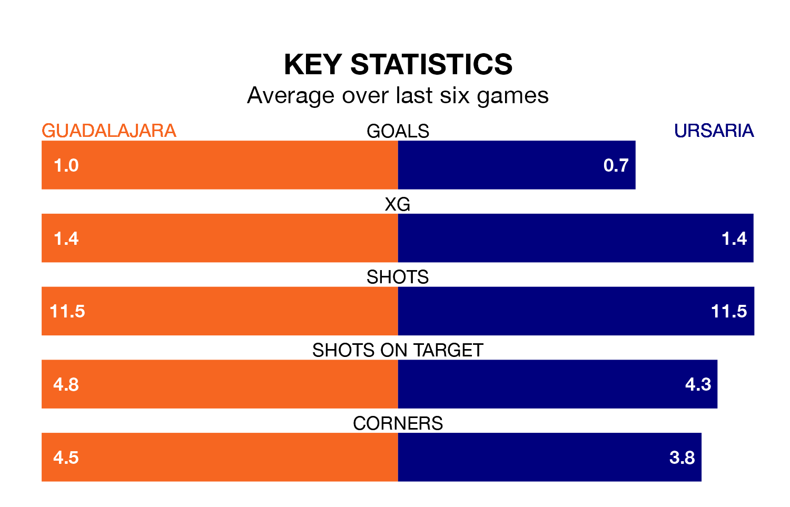

Ursaria travel to the Estadio Pedro Escartín looking to secure a first win in six Segunda División RFEF Group 5 games against Guadalajara on Sunday.
Ursaria have lost four and drawn one matches since they last earned three points – against CDA Navalcarnero on December 17.
They face a Guadalajara side who have won just one and drawn one over that time.
With 29 goals in 21 games so far this season, Guadalajara are the league's third-highest scorers with 1.4 goals per game. But they are conceding more than average too, letting in 36 goals at a rate of 1.7 per game.
Ursaria, meanwhile, are below average scorers, with 1.0 goal per game, compared to a league average of 1.1. They have conceded 1.2 goals per game.
The visitors are 13th in the table after 21 games, of which they have won six and drawn seven, earning 25 points.
The home team are four places ahead of Ursaria in ninth, with eight wins and three draws putting them on 27 points.
Guadalajara's last match was on Sunday, a 2-0 loss against UD San Fernando.
Ursaria lost 1-0 against AD Unión Adarve last time out, also on February 4.
Updated: 11:47 (UTC), 05/02/24